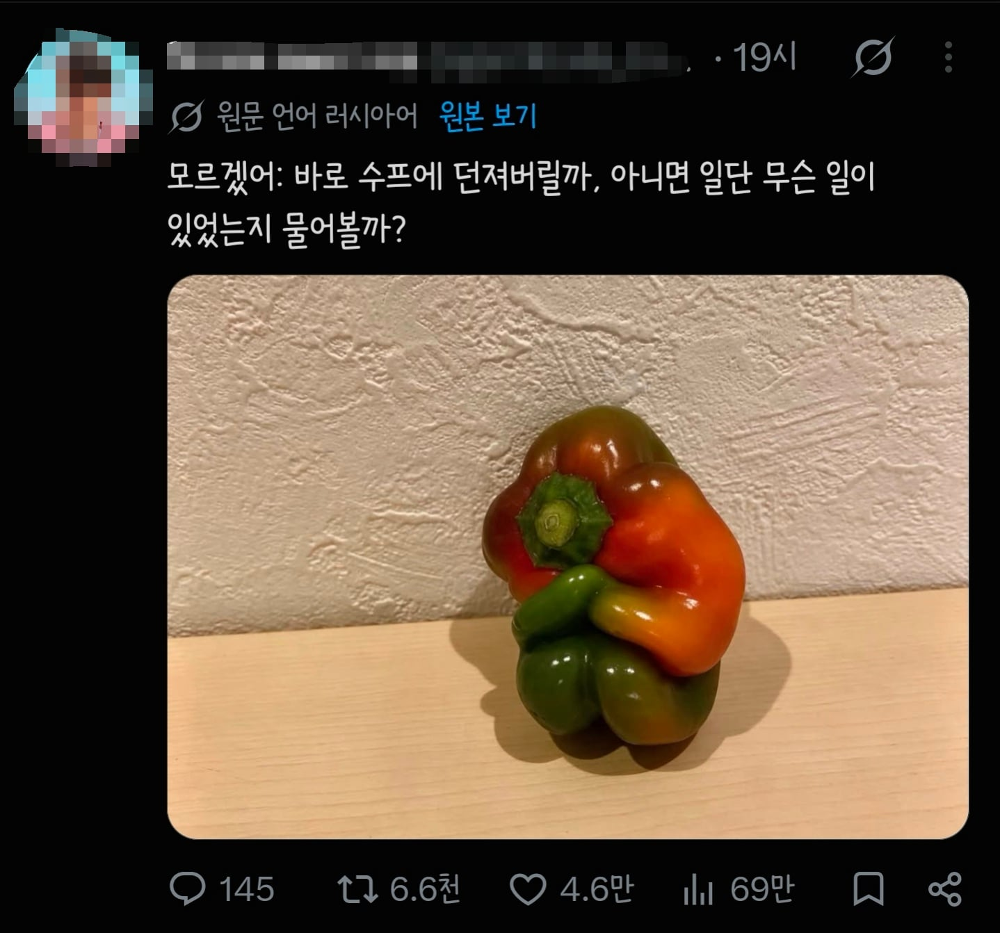

저걸 그냥 냅다 스프에 집어넣고 끓여야할지
무슨일인지 물어보고 다독여줘야할지 고민이라함

저걸 그냥 냅다 스프에 집어넣고 끓여야할지
무슨일인지 물어보고 다독여줘야할지 고민이라함
사람은 무엇으로 사는가?
추워요
아침 다섯 시, 여느 때처럼 기상을 알리는 소리가 울려퍼진다. 부엌의 조리대 위 도마를 칼로 두드리는 소리다.
볼가르스키 페레츠(친한이들은 그를 볼가라고 부른다)는 냉장고에서 힘없이 들려나와 탁자에 놓였다. 마침내 따뜻한 공기를 맞이하지만 과육 속 깊은 곳의 찬 기운이 아직도 그를 괴롭힌다. 아직 다 익지 않은 탓일까 그는 단번에 일어서지 못한다.
파프리카프츠키(역자 주:파프리카를 애칭으로 부르는 표현)는 우울에 찌들어 스스로에게 묻는다, 따지고 보면 엄연히 고추인 파프리카이지만 어찌하여 고추 노릇을 하지 못하는가?
오 파프리 파프리 왜그리 슬픈 표정을 짓는가
고개를 떨구며 그는 답한다. 친구여 내가 아무리 잊으려 해도 냉장고 속의 그 황량한 들판같은 모습은 잊을수가 없다네. 짓무른 야채들과 바닥에 눌어붙은 진물들.. 오늘 마침내 내가 바깥에 끌려나온 것도 우연이 아니라네 친구, 이제 썩지 않은 야채는 나뿐이었으니까.
낭만있네
가차샵 돌아다니면 저 포즈의 애니캐릭터 가챠만 10개씩은 보이던데
언제오려나 시리즈였나
행복한 파프리카는 모두 모습이 비슷하고, 불행한 파프리카는 모두 제각각의 불행을 안고 있다
다크소울 엔피씨같네
에드워드... 오빠...
똥싸는중이니 문닫아주자
나너무많은일이잇엇어
저 불쌍한 파프리카를 수프에 바로 던져버린다니
당신의 마음 속엔 하느님도 없소?
딱 봐도 뭔가 겁나 심각한 일이 있었네. 다리가 파랗게 될 정도까지 쭈구리고 앉아서 고민중이잖아. 일단 위로 좀 해줘라.
윤기좀봐 도자기같네
"ai임"

사람의 정의란 무엇인가 ..
ㅋㅋㅋㅋㅋㅋㅋㅋ
웅크리고 있는 거 같네ㅋㅋㅋ
냉장고가 너무 추웠다잖아 따뜻한 수프에 몸 담가줘라
오오 미하일....